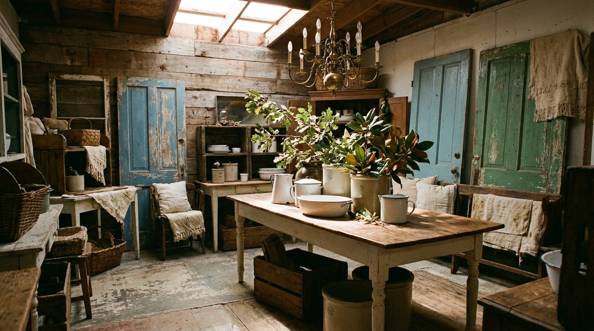

Farmhouse antiques & vintage furnishings
Cupboards, tables, benches, and the small honest pieces that make a room feel lived in. Solid wood with real wear, not reproductions.

Renningers · Mount Dora, Florida
Old doors, antique lighting, and vintage furnishings, gathered by Jackie at Booths 24-25 inside Renningers Antique Street of Shops. The kind of booth folks plan a whole weekend around.
Preview imagery below. I'll swap in real photos of the booth before launch.
What I carry
The booth changes as things find homes and new finds come in. Here's what you can usually count on when you stop by.
Cupboards, tables, benches, and the small honest pieces that make a room feel lived in. Solid wood with real wear, not reproductions.
Salvaged doors, shutters, corbels, and bits of old buildings. Great for a headboard, a pantry, or a project you've been meaning to start.
Fixtures and lamps with warmth you don't get new. Stop in to see what's hanging and what's waiting on the shelf.
Made and gathered pieces that turn over with the seasons. Ask me what's new if you're decorating for a time of year.
Preview imagery. I'll swap in real photos of the booth before launch.
The booth
Renningers is the kind of place you wander for hours. My corner sits at Booths 24 and 25, packed with old doors leaned against the wall, lighting that catches your eye, and furniture you'll keep circling back to.
I'm Jackie, and I do the picking myself. If you tell me what you're after, a door for a project, a light for a hallway, a piece for a porch, I'll point you right to it or keep an eye out for the next one.
For a long while the only way to find me was Facebook. This page is here so folks planning a trip can see what I'm about before they make the drive.
Plan your visitA look inside
Preview imagery for now. These are AI made placeholders to set the mood. I'll replace them with real photos of the actual booth before the site goes live.
Visit
Easiest thing is to call before you head out, especially if you're driving a ways. I'm happy to tell you what's in right now.
Renningers Antique Street of Shops
Booths 24-25
20651 US-441
Mount Dora, FL 32757
These are a placeholder. Renningers runs on its own schedule, so let's confirm your real booth hours before launch.
First questions
I'm at Booths 24 and 25 inside Renningers Antique Street of Shops, 20651 US-441, Mount Dora, FL 32757. Once you're in, ask anyone for the booth numbers and they'll point you my way.
My booth follows the Renningers schedule, which is mostly weekends. The hours listed on this page are a placeholder for now. Call (407) 509-3169 and I'll give you the real days and times before you drive out.
Yes, Renningers has its own lot right at the US-441 location, so you can park and walk straight in. Plan a little extra time, the place is big and easy to lose track of.
Often, yes. Give me a call or send a note through the form and tell me what you're hunting for. If I don't have it, I'll keep an eye out on my next pick.